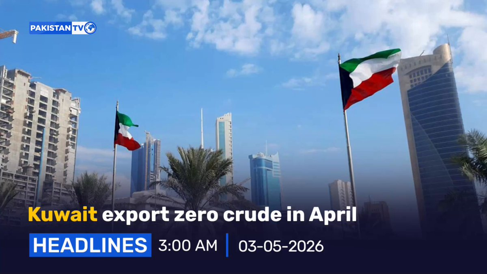
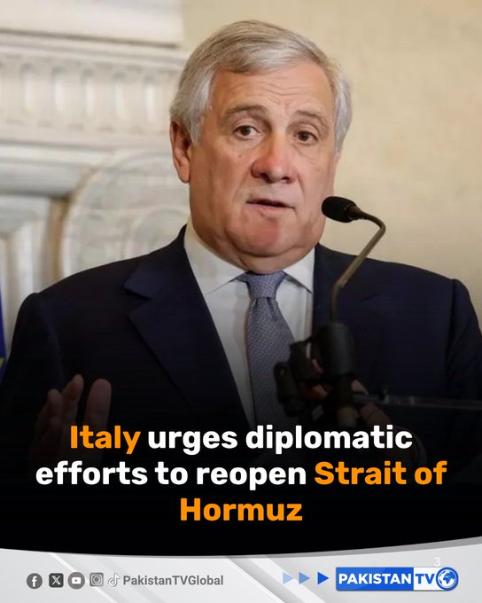
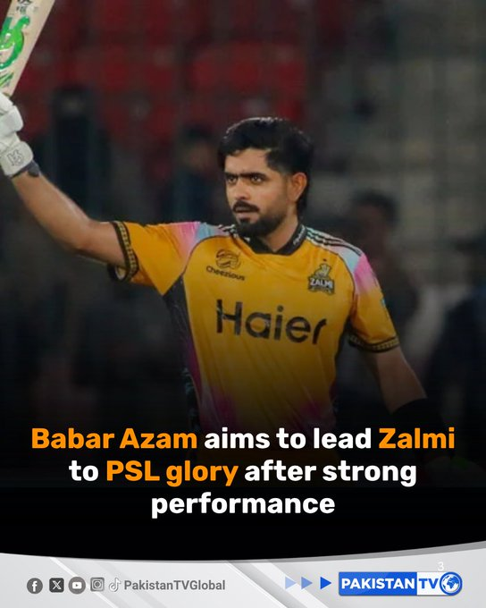
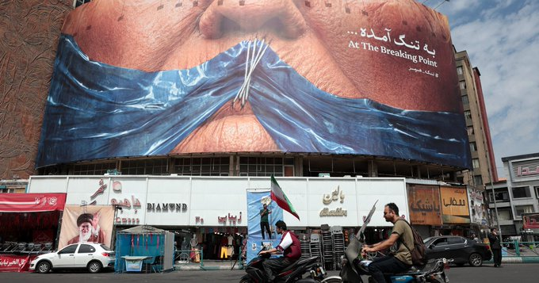
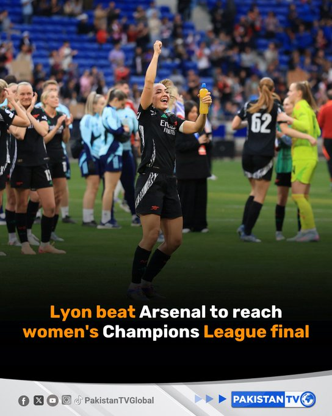
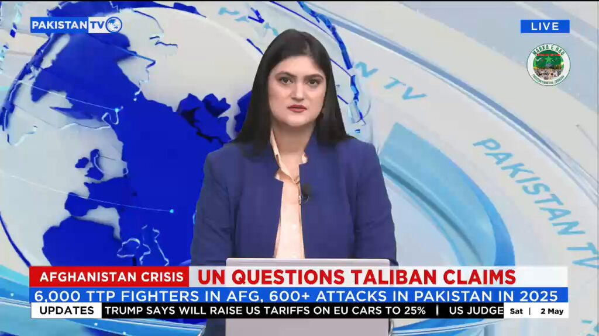

@CBSNews
📝 原文: How a whiffed NFL field goal helped save this Kentucky Derby horse expert's life.
🇨🇳 译文: 一个糟糕的 NFL 射门如何拯救了这位肯塔基德比赛马专家的生命。

🕒 2026-05-02T19:27:58+00:00
| 来源 | 旧窗口内数量 | 本次新增 | 本次淘汰 | 当前窗口内共有 |
|---|---|---|---|---|
| 推文 + Dawn 新闻 | 0 | 21 | 0 | 21 |
| ARY News | 0 | 0 | 0 | 0 |
注：淘汰数 = 旧窗口内数量 + 本次新增 - 当前窗口内共有









暂无文章。